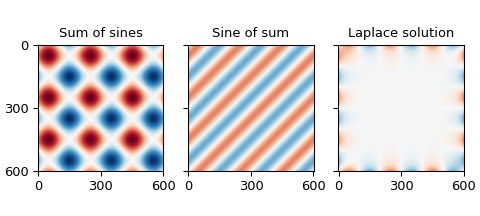
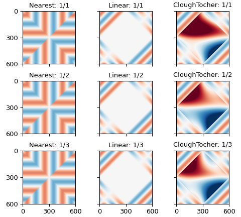
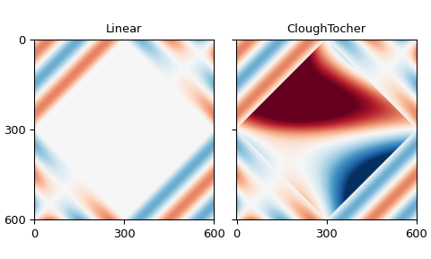
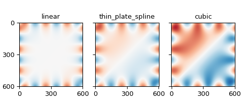
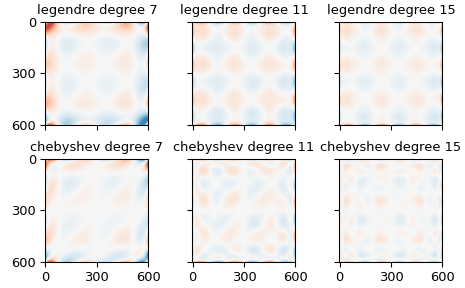
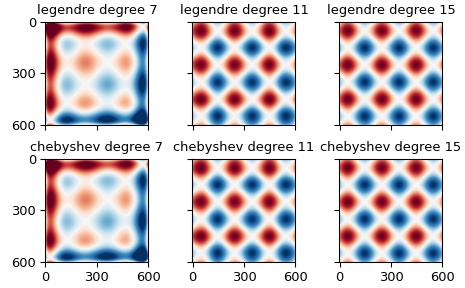
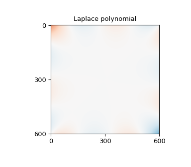

Filling an image from a border#
Suppose we have values for a function only on the border of a region, and we want to extend this function into the interior of the region. We might do this to estimate the background of a microscope image from the parts not covered by the sample, or as part of a boundary-value problem. As a concrete example, consider the estimation of the (possibly uneven) background illumination on a microscope slide from the edge of the image, away from the specimen. We might not have a model for how the function behaves in the interior of the region, so we must either make assumptions about that behavior or turn to interpolation. Naturally, different assumptions about the function’s behavior on the interior of the region and different interpolation methods will yield different estimates of the function’s value in the region. This tutorial explores many interpolation methods and a few assumptions to show the effects on behavior.
As a concrete example, consider a square with sides of length \(L\), with function values on the boundary given by
That is, a sine wave with three full periods on each side, identical on opposite sides of the square.
Analytic solutions#
With this simple boundary condition, we can find a few analytic solutions as a baseline.
On noting that each boundary condition is zero when the respective coordinate is zero or L and the boundary conditions on opposite sides of the square are the same, we can find one solution by adding the two boundary conditions together:
Since the sine is two-pi periodic and the boundary conditions reverse sign at opposite corners, we may also find a solution by summing the coordinates before taking the sine:
Another option is the solution to the Laplace equation. The Laplace equation is
Solutions to the Laplace equation are such that each point has a value close to the mean of the values of the points around it. As a result, solutions to the Laplace equation have no extrema in the interior of the region in which they are defined.
We could build an iterative solver based on this property, or we could remember some complementary properties of the circular and hyperbolic trigonometric functions and verify that the following satisfies the Laplace equation:
We now plot these functions to get a sense of their behavior.
First, a bit of setup. I choose \(L = 600\) because it has many divisors, so the zeros of the boundary will fall on the grid points.
>>> import numpy as np
>>> L = 600
>>> grid_x, grid_y = np.mgrid[:L + 1, :L + 1]
Next, we define a boolean mask to check values later, and define the function values on the boundary.
>>> mask = np.ones_like(grid_x, dtype=bool)
>>> mask[1:-1, 1:-1] = False
>>> edge_x = grid_x[mask]
>>> edge_y = grid_y[mask]
>>> border_values = np.sin(6 * np.pi * edge_x / L) + np.sin(6 * np.pi * edge_y / L)
Next the analytic solutions and plots, with a function to ensure the different functions are plotted the same way:
>>> import matplotlib.pyplot as plt
>>> def plot_and_check_filled_image(values, name):
... plt.imshow(values, vmin=-2, vmax=2, cmap="RdBu_r")
... plt.title(name)
... plt.xticks(range(0, 601, 300))
... plt.yticks(range(0, 601, 300))
... error = values[mask] - border_values
... error_mean = np.mean(error)
... error_std = np.std(error)
... return [error_mean, error_std]
...
>>> sum_of_sines = np.sin(6 * np.pi * grid_x / L) + np.sin(6 * np.pi * grid_y / L)
>>> fig, axes = plt.subplots(1, 3, constrained_layout=True, sharex=True, sharey=True,
... figsize=(5, 2.25))
>>> plt.subplot(131)
<Axes: >
>>> np.array(plot_and_check_filled_image(sum_of_sines, "Sum of sines"))
array([0., 0.])
>>> sine_of_sum = np.sin(6 * np.pi * (grid_x + grid_y) / L)
>>> plt.subplot(132)
<Axes: >
>>> np.array(plot_and_check_filled_image(sine_of_sum, "Sine of sum"))
array([3.99751787e-16, 1.28432145e-15])
>>> laplace_solution = (
... np.sin(6 * np.pi * grid_x / L) * np.cosh(6 * np.pi * (grid_y - L / 2) / L)
... + np.sin(6 * np.pi * grid_y / L) * np.cosh(6 * np.pi * (grid_x - L / 2) / L)
... ) / np.cosh(3 * np.pi)
>>> plt.subplot(133)
<Axes: >
>>> np.array(plot_and_check_filled_image(laplace_solution, "Laplace solution"))
array([3.39669872e-16, 3.60694269e-16])

The sum of the boundary conditions produces values up to \(\pm 2\), while the others are bounded by \(\pm 1\), which is the same range as the boundary. The magnitudes of the mismatches are on the order of \(10^{-15}\), which is about as small as we can expect from double-precision floating-point numbers.
Not every boundary so readily admits analytic solutions, so we broaden our search to other options.
Simple unstructured interpolators#
One option for filling the border is to interpolate between the border points. The simplest SciPy interpolation routines are the zero-order nearest-neighbor interpolator, the first-order linear interpolator, and the third-order Clough-Tocher interpolator. The latter two don’t handle the situation with dense borders and empty interior terribly well and produce NaNs in the output. Using only every other point along the border reduces but does not eliminate the problem, but using only every third point allows all interpolators to provide a value for every point.
>>> from scipy.interpolate import (
... NearestNDInterpolator, LinearNDInterpolator, CloughTocher2DInterpolator
... )
>>> full_results = []
>>> fig, axes = plt.subplots(3, 3, constrained_layout=True, sharex=True, sharey=True,
... figsize=(5, 4.5))
>>> for i in range(3):
... sparse_mask = np.zeros_like(grid_x, dtype=bool)
... sparse_mask[::i+1, ::i+1] = True
... sparse_mask[1:-1, 1:-1] = False
... sparse_x = grid_x[sparse_mask]
... sparse_y = grid_y[sparse_mask]
... sparse_values = sum_of_sines[sparse_mask]
... sparse_results = []
... for j, interpolator_class in enumerate(
... [NearestNDInterpolator, LinearNDInterpolator, CloughTocher2DInterpolator]
... ):
... interpolator = interpolator_class((sparse_x, sparse_y), sparse_values)
... values = interpolator(grid_x, grid_y)
... ax = plt.subplot(3, 3, 3 * i + j + 1)
... interpolator_name = interpolator_class.__name__.split("D")[0][:-1]
... results = plot_and_check_filled_image(
... values, f"{interpolator_name:s}: 1/{i+1:d}"
... )
... results.append(np.count_nonzero(np.isnan(values)))
... sparse_results.append(results)
... full_results.append(sparse_results)
...
>>> np.array(full_results).transpose(2, 0, 1)
array([[[ 0.00000000e+00, nan, nan],
[ 1.85457226e-05, -1.51181151e-17, -2.78868936e-10],
[-5.66098094e-18, -3.36536354e-17, -2.97769462e-09]],
[[ 0.00000000e+00, nan, nan],
[ 1.56979832e-02, 2.46719817e-04, 2.17605769e-06],
[ 1.81372478e-02, 5.69712530e-04, 6.26343610e-06]],
[[ 0.00000000e+00, 1.04000000e+02, 1.04000000e+02],
[ 0.00000000e+00, 2.00000000e+00, 2.00000000e+00],
[ 0.00000000e+00, 0.00000000e+00, 0.00000000e+00]]])
The first and second blocks show the mean and standard deviation of the differences from the provided points on the edge, respectively, and the third shows the number of NaNs produced by the interpolation.
The first column shows results using nearest-neighbor interpolation, the second results using linear interpolation, and the third using third-order Clough-Tocher interpolation.
The first row in each block shows the results using every point from the input, the second row the results from using every second point of the input, and the third row the result of using every third point in the input.

In other words, the linear and cubic interpolators have problems filling rectangles with more than two hundred points on a side.
The errors in estimating the points on the boundary from the points around them are larger, and decrease as the order of the interpolator increases, from \(\approx 10^{-2}\) for the zeroth-order nearest-neighbor interpolator to \(\approx 10^{-6}\) for the third-order clough-tocher interpolator.
Simplex tolerance#
The difficulties had with the linear and cubic interpolators arise from a floating-point tolerance value: increasing this tolerance will also reduce the problem:
Added in version v1.18.0.
>>> full_results = []
>>> fig, axes = plt.subplots(1, 2, constrained_layout=True, sharex=True, sharey=True,
... figsize=(5, 3))
>>> for i, interpolator_class in enumerate(
... [LinearNDInterpolator, CloughTocher2DInterpolator]
... ):
... interpolator = interpolator_class((edge_x, edge_y), border_values)
... multiplier = 3
... values = interpolator(grid_x, grid_y, simplex_tolerance=multiplier)
... ax = plt.subplot(1, 2, i+1)
... interpolator_name = interpolator_class.__name__.split("D")[0][:-1]
... results = plot_and_check_filled_image(values, interpolator_name)
... results.append(np.count_nonzero(np.isnan(values)))
... full_results.append(results)
...
>>> np.array(full_results).T
array([[-1.40675962e-16, -1.42020373e-16],
[ 3.23940594e-15, 3.25139344e-15],
[ 0.00000000e+00, 0.00000000e+00]])
The rows give the mean and standard deviation of the errors for the border points, while the columns are the interpolators, linear and Clough-Tocher.

Radial basis functions#
The radial-basis-function interpolators use all input points to determine interpolated values, weighting nearer points more and farther points less. The kernel determines exactly how much more or less weight a point will have based on distance: we will use the linear, thin-plate spline, and, cubic kernels here because they don’t require additional configuration for interpolation.
Since this weighting must be done for each target point, this interpolation can get a bit slow, so we thin the target grid by a factor of 8 (noting that 8 divides L, so that all borders will be included in the output) in each direction, then use a regular-grid interpolator to get back to the desired density.
>>> from scipy.interpolate import RBFInterpolator, RegularGridInterpolator
>>> results = []
>>> fig, axes = plt.subplots(1, 3, constrained_layout=True, sharex=True, sharey=True,
... figsize=(5, 2.25))
>>> for i, kernel in enumerate(["linear", "thin_plate_spline", "cubic"]):
... rbf_interpolator = RBFInterpolator(
... np.column_stack([edge_x, edge_y]), border_values, kernel=kernel
... )
... sparse_factor = 8
... sparse_x = grid_x[::sparse_factor, ::sparse_factor].reshape(-1)
... sparse_y = grid_y[::sparse_factor, ::sparse_factor].reshape(-1)
... values_vector = rbf_interpolator(np.column_stack([sparse_x, sparse_y]))
... sparse_side = L // sparse_factor + 1
... sparse_values = values_vector.reshape(sparse_side, sparse_side)
... refiner = RegularGridInterpolator(
... (grid_x[::sparse_factor, 0], grid_y[0, ::sparse_factor]),
... sparse_values
... )
... values = refiner(np.stack([grid_x, grid_y], -1))
... ax = plt.subplot(1, 3, i + 1)
... results.append(plot_and_check_filled_image(values, kernel))
...
>>> np.array(results)
array([[-1.56770893e-14, 4.07119969e-03],
[-2.57408215e-13, 4.07119969e-03],
[-2.86032633e-13, 4.07119969e-03]])
The columns show the mean and standard deviation of the differences from the provided frame, respectively. The rows iterate over the RBF kernels: linear, thin-plate spline, and cubic.

Multi-linear regression#
We are trying to predict the values of a function based on observed values, which is what linear regression is trying to do. In particular, it is trying to find a linear combination of various functions that fits the desired function, then uses that same linear combination of the same provided functions at new points to predict the desired function there.
If we collect the values of the desired function into a column vector with one point per line and call that \(y\), and similarly collect the provided functions into column vectors and collect those columns into a matrix \(X\), we seek a vector \(\beta\) such that \(y = X \beta\) is as close to satisfied as possible. Statsmodels gives the least-squares value of \(\beta\) as \(\beta = (X'X)^{-1} X' y\).
Unconstrained polynomials#
For the columns of \(X\), we start with polynomials from the NumPy polynomials package: specifically the Legendre polynomials, which are orthogonal on the interval \([-1, 1]\), which should help the numerics of the inverse, and the Chebyshev polynomials which are frequently used for interpolation.
A quadratic polynomial can produce one extrema, a cubic polynomial two, and a quartic three, so a seventh-degree polynomial should be able to produce the six extrema of the boundary conditions.
>>> from numpy.polynomial.legendre import legval2d, leggrid2d
>>> from numpy.polynomial.chebyshev import chebval2d, chebgrid2d
>>> import scipy.linalg as la
It will be helpful to map the x and y coordinates to the interval \([0, 1]\).
>>> scaled_grid_x = grid_x * 2 / L - 1
>>> scaled_grid_y = grid_y * 2 / L - 1
>>> scaled_edge_x = edge_x * 2 / L - 1
>>> scaled_edge_y = edge_y * 2 / L - 1
A seventh-degree polynomial will require eight coefficients, including the zero-order term. We try eleventh- and fifteenth-degree polynomials as well, to see if that improves the fit.
Since we provide function values only along the border of the region, the function values may be similar: we use the pseudo-inverse to avoid problems from the duplication.
>>> full_results = []
>>> fig, axes = plt.subplots(2, 3, constrained_layout=True, sharex=True, sharey=True)
>>> for i, num_coeffs in enumerate([8, 12, 16]):
... results = []
... for j, (polyval2d, polygrid2d) in enumerate(
... [(legval2d, leggrid2d), (chebval2d, chebgrid2d)]
... ):
... poly_family = polyval2d.__module__.rsplit(".", 1)[-1]
... poly_edge_values = polyval2d(
... scaled_edge_x, scaled_edge_y,
... np.eye(num_coeffs**2).reshape(num_coeffs, num_coeffs, num_coeffs**2)
... )
... coeffs = la.pinvh(
... poly_edge_values @ poly_edge_values.T,
... rtol=np.finfo(poly_edge_values.dtype).eps * L * num_coeffs
... ) @ (poly_edge_values @ border_values)
... values = polygrid2d(
... scaled_grid_x[:, 0], scaled_grid_y[0, :],
... coeffs.reshape(num_coeffs, num_coeffs)
... )
... plt.sca(axes[j, i])
... results.append(
... plot_and_check_filled_image(
... values, f"{poly_family:s} degree {num_coeffs - 1:d}"
... )
... )
... full_results.append(results)
>>> np.array(full_results).transpose(2, 0, 1)
array([[[-5.92118946e-17, 1.18423789e-17],
[-2.37772764e-17, 1.51730480e-17],
[ 2.31527760e-17, -6.11605674e-17]],
[[ 4.07910892e-01, 4.07910892e-01],
[ 2.40733605e-02, 2.40733605e-02],
[ 2.99289173e-04, 2.99289173e-04]]])
The first block shows the mean error of the estimates of the provided points, the second the standard deviation of those estimates. The first column shows estimates using Legendre polynomials, the second estimates using Chebyshev polynomials. The rows within each block iterate over the degree of the polynomial, showing results for seventh-, eleventh-, and fifteenth-degree polynomials.

The higher-order polynomials produce interesting shapes in the interior of the domain, which are pretty, but slightly concerning.
Restricted polynomials#
We can further restrict the set of polynomials to those which introduce no new extrema in the interior of the domain, by insisting all monomial terms in the polynomial fit must have one degree less than two. We notice that this description applies to the “sum of sines” described and plotted above, as it is the sum of one function constant in x and one function constant in y. It is therefore likely that these regressions will produce results similar to that function.
>>> full_results = []
>>> fig, axes = plt.subplots(2, 3, constrained_layout=True, sharex=True, sharey=True)
>>> for i, num_coeffs in enumerate([8, 12, 16]):
... results = []
... for j, (polyval2d, polygrid2d) in enumerate(
... [(legval2d, leggrid2d), (chebval2d, chebgrid2d)]
... ):
... poly_family = polyval2d.__module__.rsplit(".", 1)[-1]
... coeff_multiplier = np.ones((num_coeffs, num_coeffs))
... coeff_multiplier[2:, 2:] = 0
... poly_edge_values = polyval2d(
... scaled_edge_x, scaled_edge_y,
... np.eye(num_coeffs**2).reshape(num_coeffs, num_coeffs, num_coeffs**2)
... * coeff_multiplier[:, :, np.newaxis]
... )
... coeffs = la.pinvh(
... poly_edge_values @ poly_edge_values.T,
... rtol=np.finfo(poly_edge_values.dtype).eps * L * num_coeffs
... ) @ (poly_edge_values @ border_values)
... values = polygrid2d(
... scaled_grid_x[:, 0], scaled_grid_y[0, :],
... coeffs.reshape(num_coeffs, num_coeffs) * coeff_multiplier[:, :]
... )
... plt.sca(axes[j, i])
... results.append(
... plot_and_check_filled_image(
... values, f"{poly_family:s} degree {num_coeffs - 1:d}"
... )
... )
... full_results.append(results)
...
>>> np.array(full_results).transpose(2, 0, 1)
array([[[-3.87837910e-16, 3.07901852e-16],
[ 3.92926432e-16, -1.73194792e-16],
[-1.33660444e-16, -3.65422391e-16]],
[[ 4.07910892e-01, 4.07910892e-01],
[ 2.40733605e-02, 2.40733605e-02],
[ 2.99289173e-04, 2.99289173e-04]]])
The first block is the mean error for the provided values, the second is the standard deviation in the error for the provided values. The columns show the kind of polynomial used, Legendre or Chebyshev. The rows within each block give the degree of the polynomial, seventh, eleventh, or fifteenth.

Polynomials satisfying the Laplace equation#
A different way to restrict the polynomials to avoid interior extrema is to insist that the individual polynomials each satisfy the Laplace equation, as do, for example, \(1,x,y,x^2-y^2,xy,x^3-3xy^2,y^3-3yx^2,x^4-6x^2y^2+y^4,x^3y-xy^3,\dots\).
>>> def laplace_polynomials(x, y):
... return np.stack([
... np.ones_like(x),
... x,
... y,
... x**2 - y**2,
... x * y,
... x**3 - 3 * x * y**2,
... y**3 - 3 * y * x**2,
... x**4 - 6 * x**2 * y**2 + y**4,
... x**3 * y - x * y**3,
... x**5 - 10 * x**3 * y**2 + 5 * x * y**4,
... y**5 - 10 * y**3 * x**2 + 5 * y * x**4,
... x**6 - 15 * x**4 * y**2 + 15 * x**2 * y**4 - y**6,
... 3 * x**5 * y - 10 * x**3 * y**3 + 3 * x * y**5,
... x**7 - 21 * x**5 * y**2 + 35 * x**3 * y**4 - 7 * x * y**6,
... y**7 - 21 * y**5 * x**2 + 35 * y**3 * x**4 - 7 * y * x**6
... ])
...
>>> poly_edge_values = laplace_polynomials(scaled_edge_x, scaled_edge_y)
>>> coeffs = la.pinvh(
... poly_edge_values @ poly_edge_values.T,
... rtol=np.finfo(poly_edge_values.dtype).eps * L * num_coeffs
... ) @ (poly_edge_values @ border_values)
>>> values = np.tensordot(
... coeffs, laplace_polynomials(scaled_grid_x, scaled_grid_y), 1
... )
>>> fig = plt.figure(figsize=(4, 3.5))
>>> np.array(plot_and_check_filled_image(values, "Laplace polynomial"))
array([-5.32907052e-17, 6.62820658e-01])

Other packages#
There are packages that will solve Laplace equation with given boundary conditions.
Scikit-Image has an inpaint_biharmonic function that will solve also fill an image from the boundary conditions, in a manner related to the Laplace Equation. Scikit-image also has a rolling_ball function to estimate the background from nearby values, though that function works better with several small things rather than one large one as assumed here.
Statsmodels offers regression functions that hide the linear algebra and offer additional diagnostics. The formula.ols interface hides even more of the linear algebra, and can simplify the setup of the regression.
Closing notes#
SciPy’s interpolate package has a griddata function that acts
as a wrapper around NearestNDInterpolator,
LinearNDInterpolator, or CloughTocher2DInterpolator
and so is not described separately here. These functions work best
with points scattered through the interior of some domain, and can
give odd results in the situation outlined here.
If we happen to be in a situation where we have more than the single line of information on each edge of the domain as assumed above — perhaps we know that, say, a five-pixel border around the edge of an image will always be part of the background we want to estimate — then the regression and radial basis function approaches will be able to use this information directly. The unrestricted polynomials have a tendency to introduce extrema in the domain interior, but the two kinds of restricted polynomials are designed to minimize that problem and so are good alternatives.
The NearestNDInterpolator, LinearNDInterpolator and
NearestNDInterpolator, on the other hand, will only use the
inmost portion of that data to fill the center of the image. If we
want to use these interpolators anyway, but want them to use this
additional information, we will have to incorporate that information
into those inmost points, perhaps by replacing those points with a
mean of nearby points.